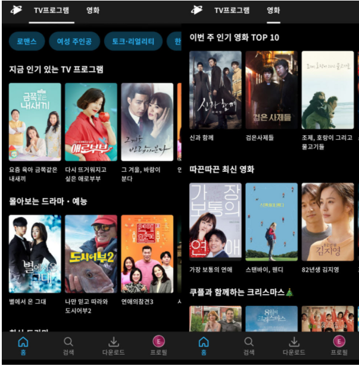

쿠팡이 온라인동영상서비스(OTT) '쿠팡플레이'를 출시했다. 로켓배송으로 확보한 유료 멤버십 회원을 기반 삼아 종합 플랫폼 사업자로 영역 확장을 꾀했다. 미국 아마존처럼 e커머스와 영상 콘텐츠를 연계해 시장 지배력을 키운다는 구상이다.
24일 쿠팡은 구글 플레이스토어를 통해 신규 OTT 서비스 '쿠팡플레이'를 정식 출시했다. 쿠팡 로켓와우 회원 전용 혜택으로, 멤버십 회원은 추가 비용 없이 다양한 영상 콘텐츠 서비스를 누릴 수 있다.
쿠팡 플레이는 일부 지상파와 종합편성채널 콘텐츠 저작권을 확보했다.
쿠팡이 온라인동영상서비스(OTT) '쿠팡플레이'를 출시했다. 로켓배송으로 확보한 유료 멤버십 회원을 기반 삼아 종합 플랫폼 사업자로 영역 확장을 꾀했다. 미국 아마존처럼 e커머스와 영상 콘텐츠를 연계해 시장 지배력을 키운다는 구상이다.
24일 쿠팡은 구글 플레이스토어를 통해 신규 OTT 서비스 '쿠팡플레이'를 정식 출시했다. 쿠팡 로켓와우 회원 전용 혜택으로, 멤버십 회원은 추가 비용 없이 다양한 영상 콘텐츠 서비스를 누릴 수 있다.
쿠팡 플레이는 일부 지상파와 종합편성채널 콘텐츠 저작권을 확보했다. 국내외 인기 드라마와 예능뿐 아니라 영화, 키즈, 애니메이션 등 다양한 영상 콘텐츠를 제공한다. 구독자 취향에 맞는 콘텐츠를 추천하고, 해외 독점 콘텐츠도 확보해 차별화를 꾀했다.
쿠팡은 가격 경쟁력으로 승부수를 띄웠다. 로켓와우 멤버십 자체가 월 구독료다. 쿠팡 로켓와우 회원비는 월 2900원이다. 기존 국내 OTT 시장 최저인 KT 시즌 5500원의 절반 수준이다. 여기에 무료 새벽배송과 무료반품 등의 쇼핑 혜택도 동시에 누릴 수 있다는 점에서 고객 유인 효과가 크다.
특히 쿠팡플레이는 가입자당 최대 5개의 멀티 프로필을 지원한다. 하나의 계정에 기기 5대를 등록할 수 있다. 동시 접속은 4대까지 가능하다. 현재 넷플릭스와 국내 OTT 업체가 지원하는 프로필은 최대 4개다.
기존 커머스 사업과 시너지도 기대된다. 이미 로켓와우를 통해 쿠팡 로켓배송과 새벽배송 서비스를 이용하는 고객은 멤버십만 연동하면 그대로 쿠팡플레이 회원으로 유입된다. 쿠팡은 회원 수에 대해 공개하고 있지 않지만 현재 로켓와우 회원 수는 500만명을 넘어선 것으로 추정된다. 단숨에 국내 이용자 366만명을 보유한 넷플릭스를 넘어 국내 시장 최대 OTT 사업자로 몸집을 불릴 수 있다.